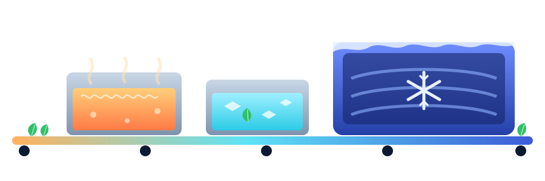

1 of 4
The clock starts at harvest
Every batch at the Nashik aggregation hub arrives with a shelf life measured in hours. A destination only accepts it if enough of that time is left when the truck pulls in.
PS 03 FreshRoute: AI-powered perishable recovery and distribution
CASCADE SALVAGE decides where each batch of produce should go while it can still get there: premium retail, a rapid mandi or a processing plant. When a highway jams, it re-plans.
Four steps through the problem, using the inventory the API is serving right now.
1 of 4
Every batch at the Nashik aggregation hub arrives with a shelf life measured in hours. A destination only accepts it if enough of that time is left when the truck pulls in.
2 of 4
The engine's baseline copies common practice: offer stock to the highest-paying retail and mandi buyers, never to processors. Stock that is rejected on arrival, or that nobody takes, expires.
3 of 4
CASCADE SALVAGE checks every destination a batch can still reach, then cascades through three tiers.
Each batch goes to one destination. Whatever that destination cannot take is counted as unallocated.
4 of 4
A jam adds hours to a route's transit time. Batches that were feasible may now arrive with too little shelf life left, so the engine runs again and finds the next option, or reports honestly that there is none.
Try a jam in the Rescue LabThe thermal path of a leafy-green batch rescued into processing: blanched near 100 °C, quenched in ice water, then frozen to −18 °C so it keeps for months instead of hours.
Illustrative curve. CASCADE SALVAGE models shelf life in hours and has no temperature sensors. These are typical processing values, not measurements.

Values follow common practice: greens are blanched about 2 minutes in boiling water and chilled in ice-cold water (USU Extension); the food-safety danger zone is 40–140 °F, about 4–60 °C (USDA FSIS); −18 °C (0 °F) is the usual frozen-storage temperature.
Run the plan, jam a highway and compare what the engine returns. Every number in this lab comes from an API response.
Allocate every batch on normal or scenario routes.
Add a highway delay or weather shock and re-plan.
The API applies the delay to the selected route's transit time. It only models delays, so other disruption types are not offered here.
Four views of one plan. Pick the plan or the re-plan; every chart, the network and the explorer follow.
Kilograms, summed from the returned allocations
Allocated kilograms against each buyer's demand
Each batch's hours, split into the trip, the buyer's minimum and the spare buffer
From the route data, with any simulated delay
Batches flow through the Nashik hub to the buyers in the plan. Line width is allocated kilograms. Select a batch, route or buyer for details.
Schematic, not a map: the data has no coordinates. Moving dots are decoration showing the direction of flow, not live vehicle tracking.
Every record the API returned. Search, sort and open any row to see how it connects to the rest.
What the model says the cascade changes, with the arithmetic shown. These are scenario results on the sample data, not field measurements.
net_profit field is revenue minus transport, so this page calls it contribution after transport.A post-harvest loss study commissioned by India's Ministry of Food Processing Industries and run by NABCONS (reference years 2020–22) covered 54 agricultural commodities. It put total tomato loss at 11.62% (FreshPlaza) and annual losses at 7.36 million tonnes of fruit and 11.97 million tonnes of vegetables (Lok Sabha reply). These figures describe the national problem; they are not outputs of this model.